My Projects
Explore my hands-on work in engineering and creating. Click on the pictures throughout the timeline for a closer look.
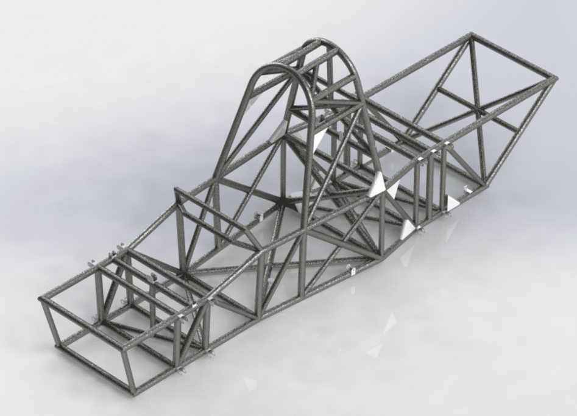
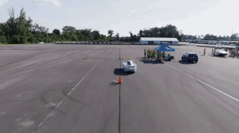
Longhorn Racing Solar
Fall 2023: Dynamics System Member
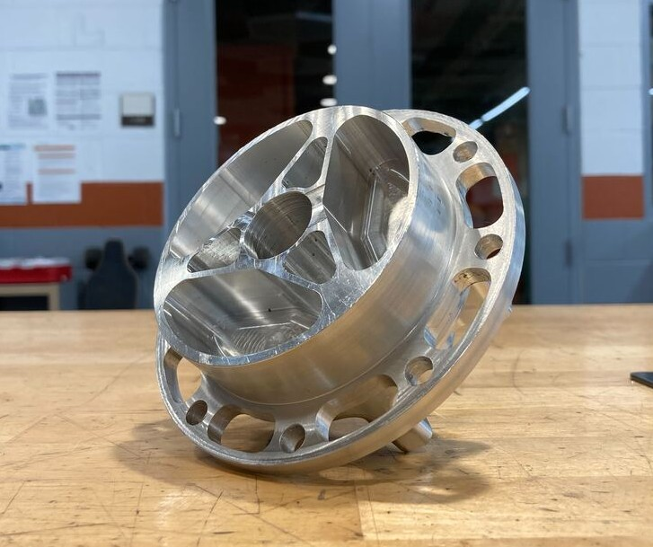
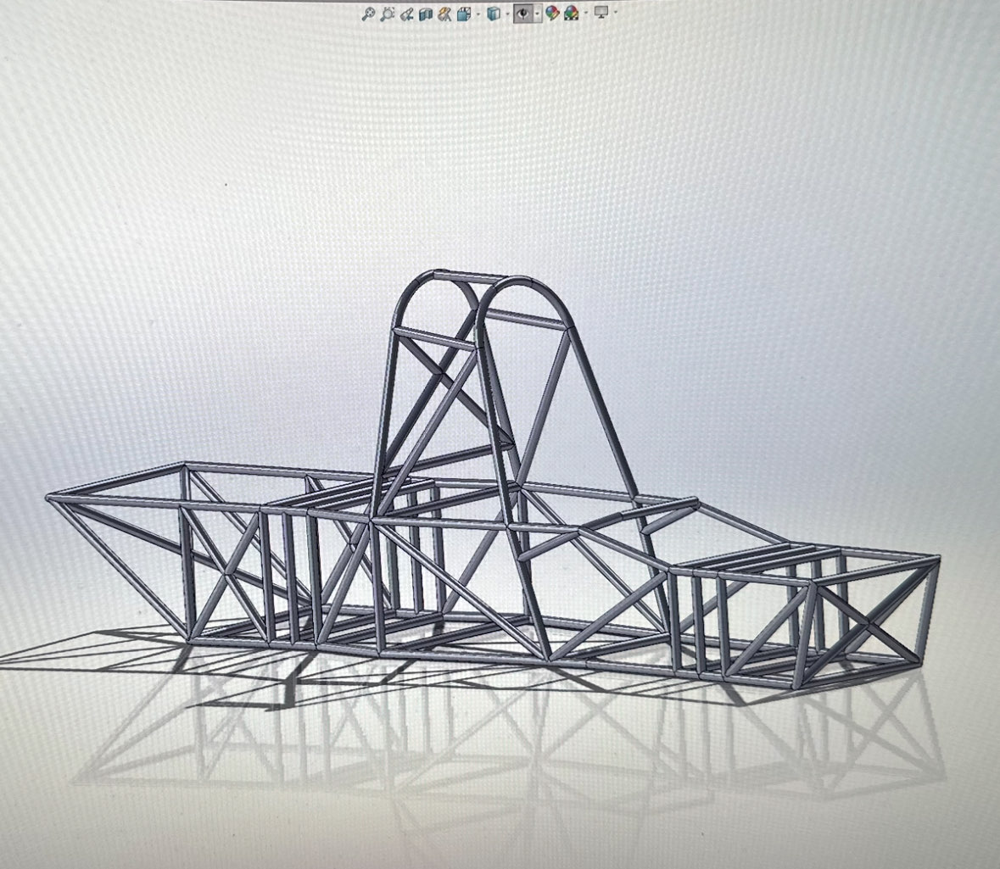
Spring 2024: Frame Subsystem Lead
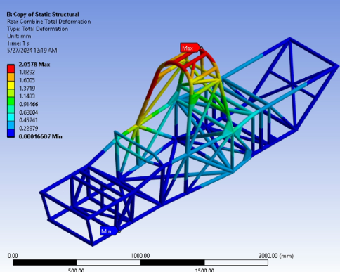
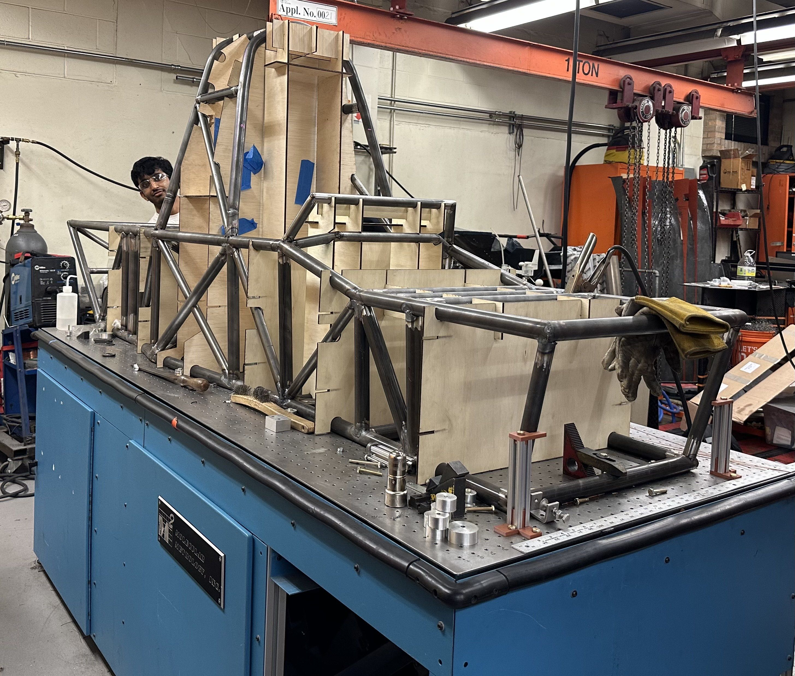
Summer 2024: FSGP Competition and future build cycle prep
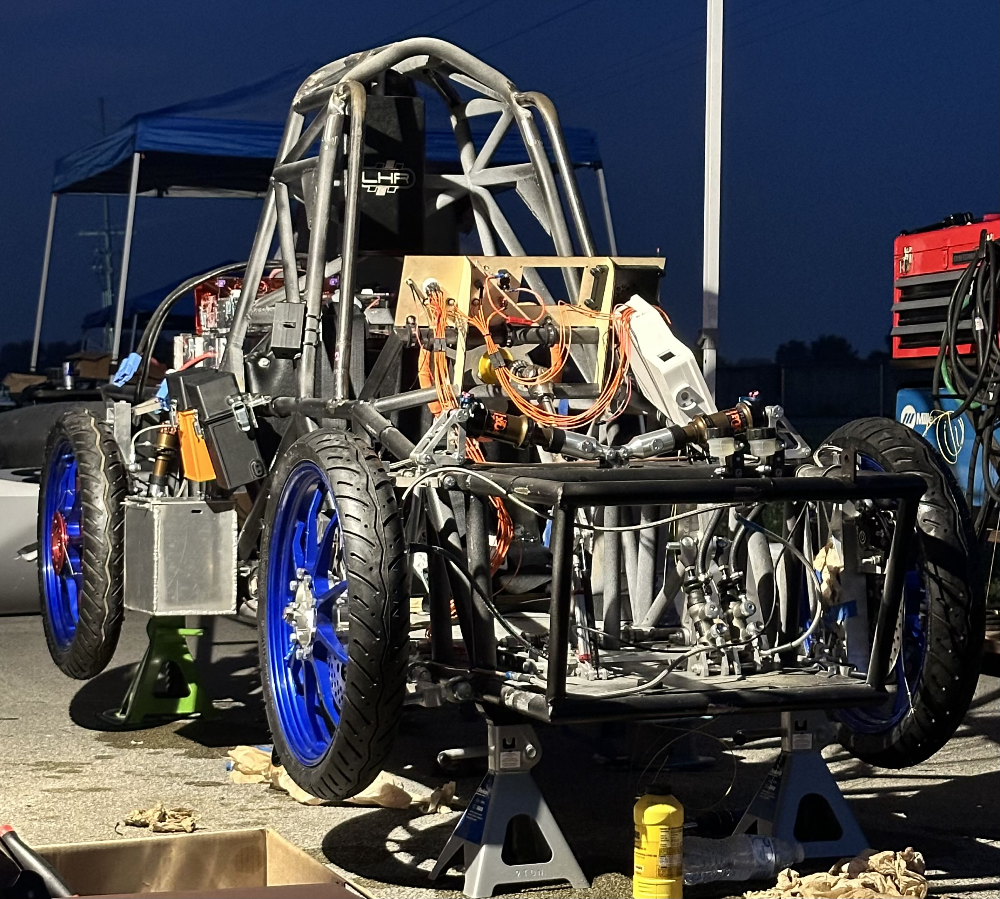
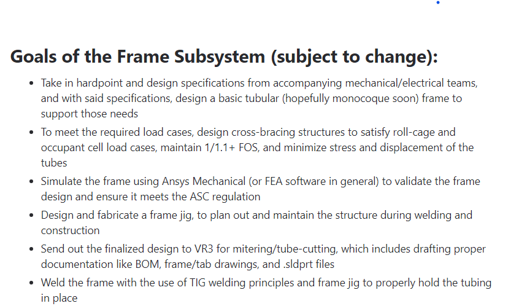
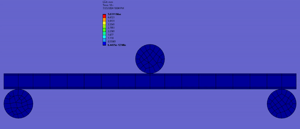
Fall 2024: Body System Lead
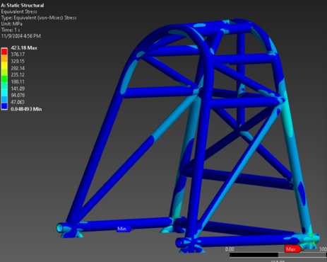
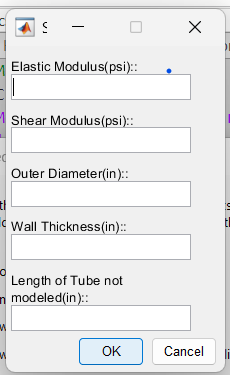
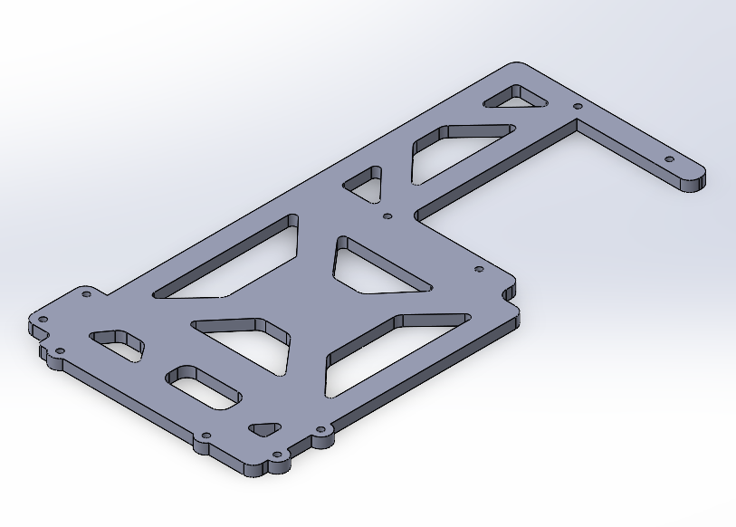
Texas Rocket Engineering Lab
Due to the nature of the projects within TREL, most of the content I worked on fell under ITAR restrictions. Because of this, I cannot disclose certain details of my projects. My work during the Spring 2024 semester included designing and packaging fluid lines for the rocket's pressurant system and assisting with LabQuest DAQ operation to characterize pressurant flow on an orifice flow bench at Firefly Aerospace’s test facility in Briggs, TX.
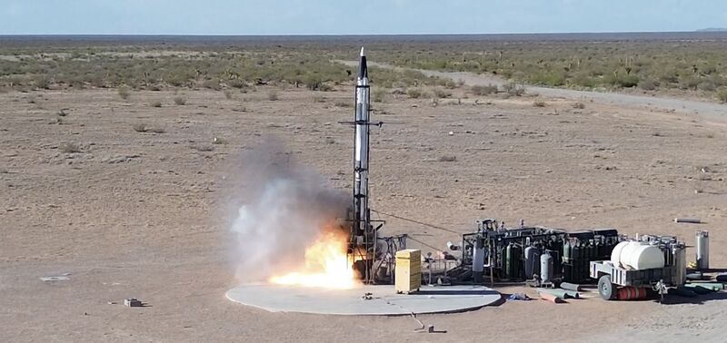